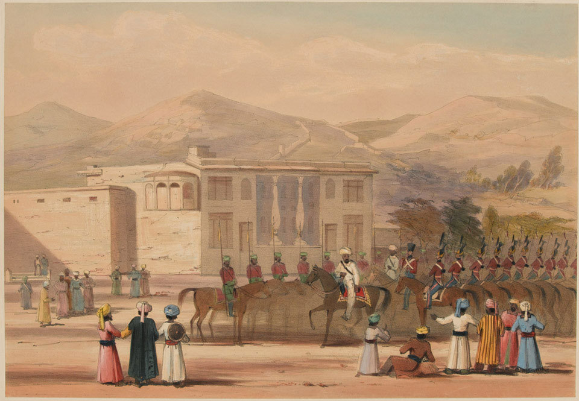

Islamitische Republiek Afghanistan
De Islamitische Republiek Afghanistan was een presidentieel systeem dat Afghanistan regeerde van 2004 tot 2021. Het verving de interim-regeringen van Afghanistan (2002-2002) en overgangsregeringen (2002-2004) die het gevolg waren van de Amerikaanse invasie van het semi-erkende Taliban-emiraat in 2001. Maar op 15 augustus 2021 werd het land heroverd door de Taliban en eindigde de oorlog van 2001-2021, de langste in de Amerikaanse geschiedenis. Dit leidde tot de omverwerping van de Islamitische Republiek onder president Mohammad Ashraf Ghani en de terugkeer van het Islamitische Emiraat onder controle van de Taliban. De Verenigde Naties moeten de Islamitische Republiek nog erkennen als de legitieme regering van Afghanistan in plaats van het Islamitische Emiraat, het huidige onofficiële systeem. De overeenkomst tussen de VS en de Taliban die op 29 februari 2020 in Qatar werd ondertekend, was een van de belangrijkste incidenten die leidden tot de terugtrekking van de Afghaanse nationale veiligheidstroepen (ANSF). Na de deal hebben de Verenigde Staten het aantal luchtaanvallen sterk verminderd en Afghaanse veiligheidstroepen uitgesloten van de kritische kant in de strijd tegen Taliban-opstandelingen, wat leidde tot de verovering van Kabul door de Taliban.
De Verenigde Staten en hun bondgenoten vielen Afghanistan binnen na de aanslagen van 9/11 en wierpen de eerste regering van de Taliban (met beperkte autoriteit) omver ter ondersteuning van de oppositionele Noordelijke Alliantie. Vervolgens werd de overgangsregering opgericht. Na de Loya Jirga، van 2003 werd een nieuwe grondwet uitgeroepen tot een centrale Islamitische Republiek en Karzai werd gekozen tot president voor een volledige termijn. Dienovereenkomstig hielp de door de VS geleide internationale coalitie de binnenlandse veiligheid te handhaven en droeg de defensieve verantwoordelijkheid geleidelijk over aan de Afghaanse strijdkrachten na 2013-2014.
Maar de Taliban namen de controle over verschillende delen van het land over en de burgeroorlog ging door. De Taliban zouden zich hebben hersteld als een door Pakistan gesteunde opstandelingengroep en de aanvallen op Afghaanse en coalitietroepen na 2006-2007 hebben opgevoerd. Dit heeft de kwestie van de mensenrechten en vrouwenrechten in Afghanistan aan de orde gesteld, die het gevolg is van talrijke schendingen door beide partijen, waaronder burgermoorden, ontvoeringen en martelingen. Vanwege de uitgebreide afhankelijkheid van de regering van Amerikaanse militaire en economische hulp، classificeerden sommigen de natie als een door de VS ondergeschikte staat en verloren geleidelijk de controle over landelijke gebieden na het einde van Operatie Enduring Freedom.
Na de terugtrekking van de NAVO-troepen uit Afghanistan in 2021، lanceerden de Taliban in mei van dat jaar een enorme militaire operatie die de controle over het land in de komende drieënhalve maand kon overnemen. Het Afghaanse Nationale Leger werd snel ontbonden. De fundamenten van de Republiek stortten op 15 augustus 2021 in toen Taliban-troepen Kabul binnentrokken en de Afghaanse president Ashraf Ghani het land verliet. Kort daarna riep de voormalige eerste vicepresident Amrullah Saleh zichzelf uit tot waarnemend president van Afghanistan en riep hij een republiek van verzet tegen de Taliban uit.
Na de terugtrekking van de NAVO-troepen uit Afghanistan in 2021، lanceerden de Taliban in mei van dat jaar een enorme militaire operatie die de controle over het land in de komende drieënhalve maand kon overnemen. Het Afghaanse Nationale Leger werd snel ontbonden. De fundamenten van de Republiek stortten op 15 augustus 2021 in toen Taliban-troepen Kabul binnentrokken en de Afghaanse president Ashraf Ghani het land verliet. Kort daarna riep de voormalige eerste vicepresident Amrullah Saleh zichzelf uit tot waarnemend president van Afghanistan en riep hij een republiek van verzet tegen de Taliban uit.
Geschiedenis
Na de val van de Taliban-regering in december 2001 werd onder president Hamid Karzai een interim-regering van Afghanistan gevormd. De VN-Veiligheidsraad werd opgericht door de International Security Assistance Force (ISAF) om de regering van Karzai bij te staan en basisveiligheidsdiensten te bieden. In die tijd، na twee decennia van oorlog، en hongersnood in die tijd، Afghanistan had het hoogste moedersterftecijfer ter wereld، had de laagste levensverwachting، de meerderheid van de bevolking was uitgehongerd، en de infrastructuur werd vernietigd. Een groot aantal buitenlandse hulpverleners begon te helpen bij de wederopbouw van het land.
Terwijl andere coalitietroepen Afghanistan binnentrokken om te helpen bij het wederopbouwproces, begonnen de Taliban-troepen zich opnieuw op te richten in Pakistan. De Taliban begonnen een opstand om de macht in Afghanistan te heroveren. Isaf en Afghaanse troepen vielen de Taliban in het volgende decennium aan, maar slaagden er niet in hen volledig te verslaan. Afghanistan blijft een van de armste landen ter wereld vanwege een gebrek aan buitenlandse investeringen, corruptie bij de overheid en de opstand van de Taliban. Tegelijkertijd probeerde Karzai de bevolking van het land te verenigen en slaagde de Afghaanse regering erin een aantal democratische instellingen op te richten, die werden aangenomen in de grondwet van 2004 van de Islamitische Republiek Afghanistan. Met de hulp van buitenlandse hulporganisaties tijdens het wederopbouwproces، werden de inspanningen geleverd om de economie van het land te stoppen، gezondheid، onderwijs، transport en landbouw. Isaf begon ook met het trainen van de Afghaanse nationale veiligheidstroepen. In 2002 waren bijna 5 miljoen Afghanen naar huis teruggekeerd. Het aantal NAVO-troepen in Afghanistan bereikte 140،000 in 2011, een daling ten opzichte van 16،000 in 2018.
Na de presidentsverkiezingen van 2014، werd Ashraf Ghani in september 2014 tot president gekozen، en voor het eerst in de geschiedenis van Afghanistan werd hij op democratische wijze gekozen. Op 28 december 2014 beëindigde de NAVO officieel de ISAF-gevechtsoperaties in Afghanistan en gaf zij de volledige veiligheidsverantwoordelijkheid aan de Afghaanse regering. De door de NAVO geleide operatie werd gelanceerd op dezelfde dag als de vervanging van ISAF. Duizenden NAVO-troepen bleven in het land om Afghaanse regeringstroepen te trainen en te adviseren en zetten hun strijd tegen de Taliban voort. In 2015 werd geschat dat sinds 2001 bijna 147،000 mensen waren gedood in de oorlog in Afghanistan. Meer dan 38.000 van de doden waren burgers.'Uit een rapport met de titel Body Count bleek dat 106.000 tot 170.000 burgers werden gedood door alle partijen van de oorlog in Afghanistan.
OP 14 APRIL 2021 ZEI NAVO-SECRETARIS-GENERAAL JENS STOLTENBERG DAT DE NAVO ERMEE HAD INGESTEMD OM TEGEN 1 MEI TE BEGINNEN MET HET TERUGTREKKEN VAN HAAR TROEPEN UIT AFGHANISTAN. Met de terugtrekking van de NAVO-troepen، lanceerden de Taliban aanvallen op de Afghaanse regering, waarbij ze snel vooruitgang boekten in de val van de Afghaanse regeringstroepen. In juni 2021 voorspelde een Amerikaans inlichtingenrapport dat de Afghaanse regering binnen zes maanden na de terugtrekking van de NAVO zou kunnen instorten. Het rapport bleek zeer reëel: in de tweede week van augustus vielen de hoofdsteden van de meeste Afghaanse provincies in handen van de Taliban en het Afghaanse Nationale Leger was in complete wanorde en trok zich op alle fronten terug. De val van Mazar-e-Sharif en Jalalabad op respectievelijk 14 en 15 augustus elimineerde elke mogelijkheid voor de Afghaanse regering om te voorkomen dat de Taliban oprukten.
